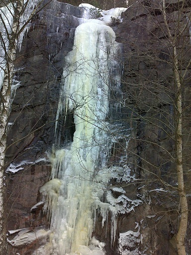

3-4st branta isfall 8-12m höga WI4 - WI6, M?. Det finns ytterligare ett par Mix/Drytool linjer att göra.Klippan ligger nordvänd och isen håller länge. Vägverket har varit snälla och satt upp bultar på toppen på de leder som ligger längst österut vid de andra så står träd strategiskt för topprep och nedfirning. Klippan och isen är upplyst av gatubelysningen så kvällsklättring är en baggis utan pannlampa.
Kategori:Is
Ta E20 österut mot Lerum. Sväng av mot Jonsered och isen finns på berget du ser rakt framför dig när du svänger av motorvägen. Parkering på Stärteredsvägen eller Länsmansvägen.

Från vänster: Intenät, namnlös, namnlös, WWW, namnlös

Intenät, ca 8 m, WI4, förstabestigare Stefan Weddmark 20110216
WWW - Wordld Wide Wedd, ca 12 m, WI4, förstabestigare Stefan Weddmark 20110216
Kategori:Trad
Ingen känd accessproblematik
Kategori:Is
--
Bultfeber
18 februari 2011 kl. 13.02 (CET)
Kategori:Västergötland
Kategori:Göteborg
Copyright (C) Permission is granted to copy, distribute and/or modify this document under the terms of the GNU Free Documentation License, Version 1.3